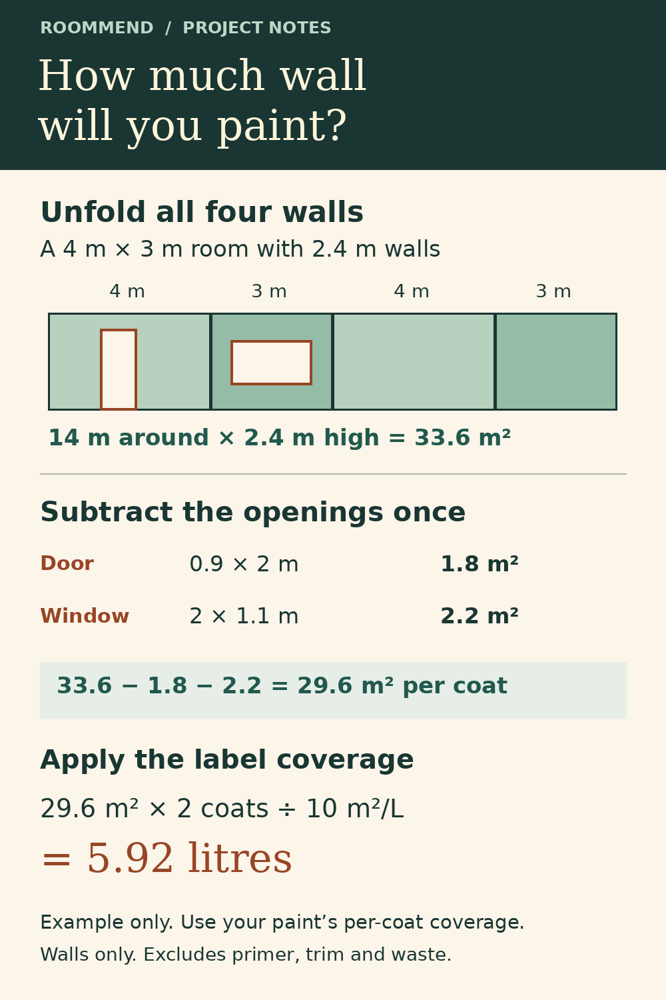

Measure openings instead of using a default
Add the areas of doors and windows you intend to exclude. Do not subtract the same opening twice.
Wall Paint Area Calculator: Room Size, Openings and Coats
Before comparing tins, work out the area you actually plan to cover. Enter the room, your measured openings and the coverage printed on your chosen paint.
Try the free tool ↓No sign-up · No tracking scripts · Your inputs stay in this page
Changing units does not convert inputs. Re-enter measurements and coverage in the selected units. Coverage is per coat; the calculator multiplies by coats.
Nothing is saved or sent. Reloading restores the example.
EXPLORE THE RESULT
A 4 × 3 m room with 2.4 m walls has 33.6 m² of wall area. Subtract 4 m² of openings: 29.6 m². Two coats at 10 m²/L need 5.92 L before any allowance.
The 4 m × 3 m room has 14 m of wall length. At 2.4 m high, that gives 33.6 m². A 0.9 m × 2 m door takes off 1.8 m² and a 2 m × 1.1 m window takes off 2.2 m². That leaves 29.6 m² per coat.

Add the areas of doors and windows you intend to exclude. Do not subtract the same opening twice.
Coverage varies with paint, surface and application. Enter the label's per-coat coverage; the illustrative default is not a product recommendation.
This model covers four rectangular walls. It excludes ceilings, trim, recesses, primer and waste. Round purchases to available container sizes only after reviewing those needs.
Inside the iPhone app
RoomMend carries the wider home project beyond this paint estimate: notes, photo markers and a room-by-room fix list.


App Store screenshots. Select a screen for a larger view. Example entries are shown; this webpage does not transfer its inputs into the app.
RoomMend: Safer Home Plans
RoomMend organizes room-by-room fix lists, photos, notes, target dates and reminders to look again. It can keep the wider project organized after you have checked your measurements here.
Explore RoomMend on the App Store ↗RoomMend has free core features and an optional one-time Plus purchase. The app is not advertised as a paint calculator. This separate worksheet does not inspect surfaces or prescribe preparation work.
App details checked against the official App Store listing on November 4, 2026. Check current availability and purchase terms there.
On another device? Scan with your iPhone Camera, then tap the link.

Open RoomMend: Safer Home Plans on the App Store
The code opens the App Store. It does not transfer entries or results from this page.
No. It changes the unit labels only. Re-enter every measurement and coverage value in the selected system.
Calculate each wall's area separately and use a suitable worksheet. This model assumes a rectangular floor plan and a single wall height.
No. It is an estimate from your inputs. Surface condition, coverage and additional allowances can change what you need.
Background references for the definitions or approach used above:
Share the public guide. Your entries and results are not included.
Open the public guide link